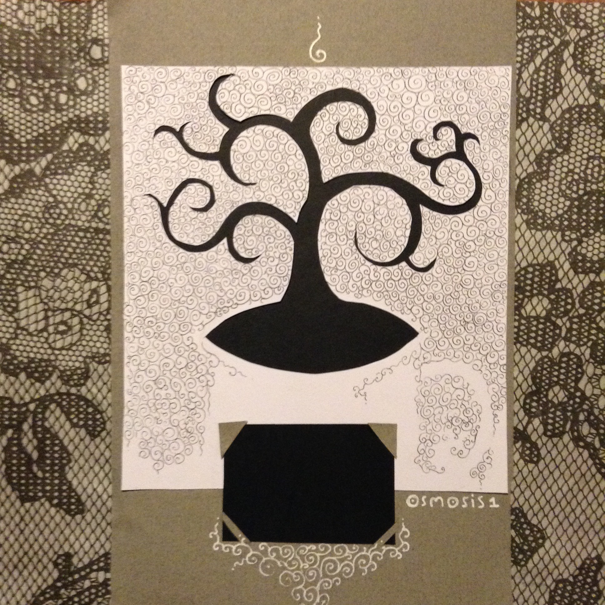
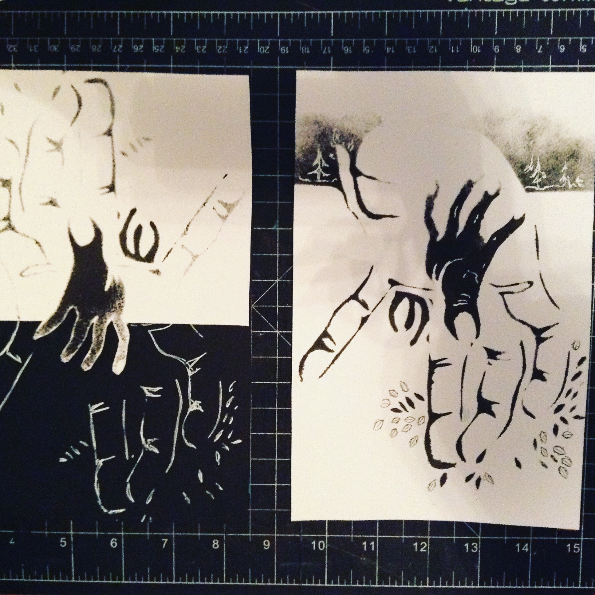

Osmosis #1
Productivity Issue ~ November 2015
by Katerena Kuksenok
Front
Front cover
The perfect cup of coffee is the one not used as a performance-enhancing drug.
Time
page 1 page 2
Time has a way of expanding and contracting around you. If you often feel like you have no idea where time goes, maybe you could use better tools for (1) articulating your hopes and goals and (2) reflecting on your progess.
Elightenment
page 3 page 4
Step 1: Awareness
Step 2: Non-Judgment
Step 3: Englightenment
Just because you can decompose it into a set of steps does not reduce its fundamental enormity. (Enormity is ok.)
Creavivity
page 5 page 6
Research on creativity reflects duality of joy and torture. The art of making can be both deeply satisfying, nourishing, and engrossing, but also has a high co-incidence with emotional suffering.
Flow is best achieved when there the right combination of challenge and skill: hard enough not to be bored, not so hard as to be overwhelmed.
No one has ever written, painted, sculpted, modeled, built, or invented except literally to get out of hell. ― Antonin Artaud
To consistently get into the flow state, it's necessary to cultivate skills in articulating goals (see page TK) and reflecting on progress (see page TK).
Meditation may help build concentration skills necessary for flow, as well as to cope with possible emotional overwhelm of creativity or inspiration (see page TK).
Execution
page 7 page 8
"Execution" spread (prior to the text)
At a startup weekend event, a guy - who had just finished off a beer and got started on a redbull - told me "ideas are cheap, execution is everything." I craved wisdom so I took it to heart, and it's been a good guide. Having ideas and starting things is much easier than doing the work [Do the Work] and adapting to constraints, context, and feedback [Founders].
Especially for feedback, I recommend lowering the stakes and being open. For best feedback, things must be just refined enough: to demonstrate the details you want help with, but not more. Also, people can be feel more free to critique when given options between which to compare, which helps them feel less like they are insulting your hard work.
Meditation
page 9
 Matter for "Enlightenment" and "Meditation" Spreads
Matter for "Enlightenment" and "Meditation" Spreads
Busy-ness can be an escape from the pain that becomes apparent (& unbearable) in moments of quiet.
"Everything can be taken from a man but one thing: the last of the human freedoms—to choose one’s attitude in any given set of circumstances, to choose one’s own way." ― Victor Frankl
Being still is a skill
but it's really a thrill
to be peaceful at will
(so I'd argue it's well worth the trouble)
Crafting a place of refuge within yourself, cultivating peace, takes patience and persistence. Formal practice (meditating) helps build the skill for everyday, informal practice (creating a healing moment of peace after a long day on a crowded bus; finding inspiration in everything; focusing on a task and not getting distracted; etc)
Readings Apps & Resources
page 10
- Viktor E. Frankl. Man's Search for Meaning. Reflections of a Holocaust survivor. Will make you cry, but you should read it.
- Randy Pausch's Last Lecture. Poignant, thoughtful, actionable; will probably also make you cry.
- Kay Redfield Jamison. Touched with Fire. (Or, if it's too dense, try Marbles, which is a graphic novel memoir featuring an artist who thought Touched with Fire was way too dense.)
- Rebecca Solnit. Field Guide to Getting Lost. 3. The Rise 5. Csikszentmihalyi. Flow. (There is also a TED Talk he gave about this.) 4. Steven Pressfield. Do the Work. 6. Jessica Livingston. Founders at Work. 7. Anything by Thich Nhat Hanh. 8. The Life-Changing Magic of Tidying Up. Marie Kondo. 10. DBT handbook (mine) 9. Katerena Kuksenok. How I Do User Research.
Back
 Back cover
Back cover
Every book has a role, particular to a time and a place. Sometimes, that role is be half-read. Letting go is ok.
Osmosis zine & prints: http://osmosis.gallery
Monthly newsletter: http://tinyletter.com/katerena
Questions, comments, ideas, or requests? katerena.kuksenok at gmail.com